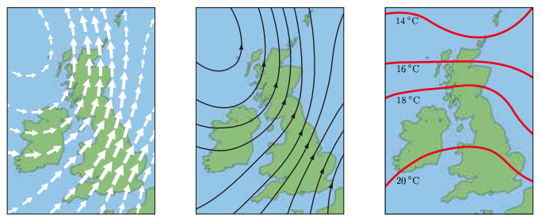
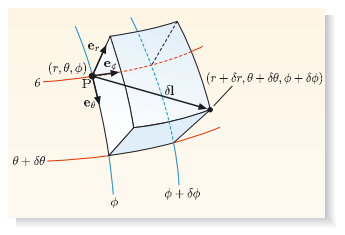
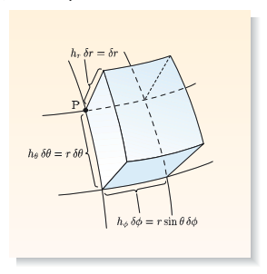
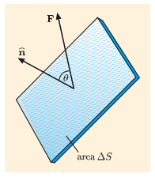
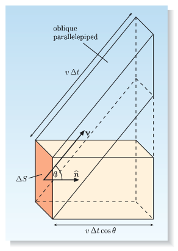
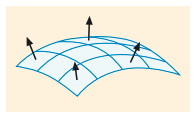
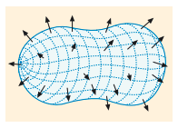
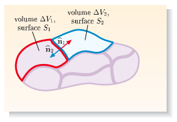
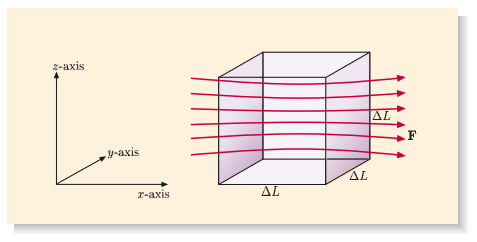
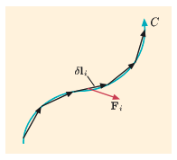

A field is a physical quantity which, at a given instant, has definite values throughout a region of space. The region may be the whole of space or a continuous set of points within it. It should not be a discrete set of isolated points. Fields can be classified as being either scalar fields or vector fields. A scalar field is a field with scalar values throughout a region of space. Each point in the region has a particular scalar value of the field quantity. A vector field is a field with vector values throughout a region of space. Each point in the region has a particular magnitude and a direction of the field quantity.
For vector fields, we can use arrow maps or field line patterns. An arrow map (see the figure below on the left) displays arrows at a selection of points, with the length and direction of the arrow at a given point indicating the magnitude and direction of the vector field at the point. Alternatively, we can show a set of field lines (see the figure below on the middle). A field line is a continuous line that points in the direction of the field at each point along its path. A field line pattern tells us about the direction of the vector field, but does not automatically give quantitative information about the magnitude of the field. For scalar fields, we simply draw lines (in two dimensions) or surfaces (in three dimensions) on which the field has a constant value (see the figure below on the right). These are called contour lines (in 2D) or surfaces (in 3D), but more specific names are given in different circumstances (e.g. isobars for pressure, isotherms for temperature and equipotentials for electrostatic fields).
So far, we have concentrated on Cartesian coordinates, \( x \), \( y \) and \( z \). However, fields are often described in other coordinate systems. If a field has spherical symmetry about a given point, it is sensible to use spherical coordinates centred on that point. If a system has cylindrical symmetry about a given axis, it is sensible to use cylindrical coordinates centred on the axis.
The figure below shows how the spherical coordinates (\( r \), \( \theta \), \( \phi \)) of a point \( P \) are defined:
Using trigonometry in figure above, we see that a point \( P \) with spherical coordinates (\( r \), \( \theta \), \( \phi \)) has Cartesian coordinates \[ \begin{aligned} x &= r sin(\theta) cos(\phi), \\ y &= r sin(\theta) sin(\phi), \\ z &= r cos(\theta). \end{aligned} \]
The inverse transformations are \[ \begin{aligned} r &= \sqrt{x^2 + y^2 + z^2}, \\ \theta &= cos^{-1} \left( \frac{z}{\sqrt{x^2 + y^2 + z^2}} \right), \\ \phi &= tan^{-1} \left( \frac{y}{x} \right). \end{aligned} \]
We must restrict spherical coordinates to lie in the ranges: \[ 0 \leq r < \infty \text{, } 0 \leq \theta \leq \pi \text{ and } 0 \leq \phi < 2\pi, \] where we follow the usual convention of measuring angles in radians. These ranges allow spherical coordinates to cover the whole of space. Every point can be represented by a set of spherical coordinates. The given ranges also ensure that most points have only one set of spherical coordinates. The exceptions are points on the \( z \)-axis of the figure above. Any value of \( \phi \) can be chosen at these points and any values of \( \theta \) and \( \phi \) can be chosen at the origin.
To describe a scalar field \( f \) in spherical coordinates we express it as a function of \( r \), \( \theta \) and \( \phi \): \[ f = f(r, \theta, \phi). \]
To describe a vector field \( \boldsymbol{F} \) in spherical coordinates we need suitable unit vectors. At any given point, we introduce the spherical unit vectors shown in figure below. Each unit vector points in a direction where one spherical coordinate changes and the other two remain fixed:
It is essential to realize that the directions of the spherical unit vectors vary from point to point. The notion of pointing radially outwards, for example, depends on where we are. Every point \( \boldsymbol{r} \) has its own set of unit vectors, \( \boldsymbol{e_r(r)} \), \( \boldsymbol{e_\theta(r)} \) and \( \boldsymbol{e_\phi(r)} \). In this respect spherical unit vectors are unlike Cartesian unit vectors, which remain the same everywhere once we have chosen our axes.
At any given point \( \boldsymbol{r} \), the triplet of vectors (\( \boldsymbol{e_r(r)} \), \( \boldsymbol{e_\theta(r)} \), \( \boldsymbol{e_\phi(r)} \)) forms an orthogonal right-handed system. For example, \[ \boldsymbol{e_r(r)} \cdot \boldsymbol{e_\theta(r)} = 0 \text{ and } \boldsymbol{e_r(r)} \times \boldsymbol{e_\theta(r)} = \boldsymbol{e_\phi(r)}. \]
The value of a vector field at \( \boldsymbol{r} \) can therefore can be expanded in terms of these unit vectors: \[ \boldsymbol{F(r)} = F_r(\boldsymbol{r}) \boldsymbol{e_r(r)} + F_\theta(\boldsymbol{r}) \boldsymbol{e_\theta(r)} + F_\phi(\boldsymbol{r}) \boldsymbol{e_\phi(r)}. \]
Spherical coordinates can also be used to describe small displacements and small volume elements. Consider a small displacement \( \delta l \) from a point \( P \) with spherical coordinates (\( r \), \( \theta \), \( \phi \)) to a neighbouring point with coordinates (\( r + \delta r \), \( \theta + \delta \theta \), \( \phi + \delta \phi \)). This displacement is assumed to be so small that we can neglect any change in direction of the spherical unit vectors between the start-point and end-point and neglect terms that are second-order (or higher, like \( (\delta r)^2 \), \( (\delta \theta)^2 \), etc.) in \( \delta r \), \( \delta \theta \) and \( \delta \phi \). As shown in figure below, the displacement can be split into separate displacements in the directions of \( \boldsymbol{e_r} \), \( \boldsymbol{e_\theta} \) and \( \boldsymbol{e_\phi} \).
The radial displacement is simply \( \delta r \boldsymbol{e_r} \). The displacement in the direction of \( \boldsymbol{e_\theta} \) is along an arc of the blue circle in the figure above. This circle has radius \( r \) and angular coordinate \( \theta \), so the displacement is \( r \delta \theta \boldsymbol{e_\theta} \). The displacement in the direction of \( \boldsymbol{e_\phi} \) is along an arc of the red circle in the figure above. This circle has radius \( r sin(\theta) \) and angular coordinate \( \phi \), so the displacement is \( r sin(\theta) \delta \phi \boldsymbol{e_\phi} \). Adding these three displacements together gives the displacement vector \( \delta \boldsymbol{l} \) between the two neighbouring points (\( r \), \( \theta \), \( \phi \)) and (\( r + \delta r \), \( \theta + \delta \theta \), \( \phi + \delta \phi \)): \[ \delta \boldsymbol{l} = \delta r \boldsymbol{e_r} + r \delta \theta \boldsymbol{e_\theta} + r sin(\theta) \delta \phi \boldsymbol{e_\phi}. \] Note that the displacement \( \delta \boldsymbol{l} \) does not just depend on the changes in coordinates, \( \delta r \), \( \delta \theta \) and \( \delta \phi \) — it also depends on the coordinates \( r \) and \( \theta \) themselves.
It is useful to introduce the notation of scale factors. For any coordinate \( q \) and its associated unit vector \( \boldsymbol{e_q} \), we consider a small change \( \delta q \), while keeping the other coordinates fixed. Then the scale factor \( h_q \) is defined as the factor by which \( \delta q \boldsymbol{e_q} \) must be multiplied to give the resulting displacement.
Comparing with the equation for \( \delta \boldsymbol{l} \), we see that the scale factors for spherical coordinates are \[ h_r = 1 \text{, } h_{\theta} = r \text{ and } h_{\phi} = r sin(\theta), \] in terms of which the displacement takes the symmetrical form \[ \delta \boldsymbol{l} = h_r \delta r \boldsymbol{e_r} + h_{\theta} \delta \theta \boldsymbol{e_{\theta}} + h_{\phi} \delta \phi \boldsymbol{e_{\phi}}. \]
Finally, because the spherical unit vectors are orthogonal, the small volume element shown in the figure above is very nearly a cube and so has volume \[ \delta V = (h_r \delta r) (h_{\theta} \delta \theta) (h_{\phi} \delta \phi). \] Therefore the volume element in spherical coordinates is \[ \delta V = (\delta r) (r \delta \theta) (r sin(\theta) \delta \phi) = r^2 sin(\theta) \delta r \delta \theta \delta \phi. \]
The figure below shows how the cylindrical coordinates (\( r \), \( \phi \), \( z \)) of a point \( P \) are defined:
Note that \( r \) in cylindrical coordinates is not the same as \( r \) in spherical coordinates. It is therefore important always to say which coordinate system is being used in a given situation.
Using trigonometry in the figure above, we see that the cylindrical coordinates (\( r \), \( \phi \), \( z \)) of a point \( P \) are related to the Cartesian coordinates (\( x \), \( y \), \( z \)) of the same point by \[ \begin{aligned} x &= r cos(\phi) \\ y &= r sin(\phi) \\ z &= z. \end{aligned} \] The inverse transformations are: \[ \begin{aligned} r &= \sqrt{x^2 + y^2} \\ \phi &= tan^{-1}(y / x) \\ z &= z. \end{aligned} \] The angle \( \phi \) is measured in radians and the three coordinates are restricted to lie in the ranges: \[ 0 \leq r < \infty \text{, } 0 \leq \phi < 2 \pi \text{ and } - \infty < z < \infty. \]
To describe a scalar field \( f \) in cylindrical coordinates we express it as a function of \( r \), \( \phi \) and \( z \): \[ f = f(r, \phi, z). \]
To describe a vector field \( \boldsymbol{F} \) in cylindrical coordinates we use the cylindrical unit vectors shown in the figure below. Each unit vector points in a direction in which one cylindrical coordinate changes while the other two remain fixed.
Although \( \boldsymbol{e_z} \) maintains a constant direction, the other two unit vectors are functions of position. At any given point \( r \), the triplet of vectors \( (\boldsymbol{e_r(r)}, \boldsymbol{e_{\phi}(r)}, \boldsymbol{e_z}) \) forms an orthogonal right-handed system with, for example, \[ \boldsymbol{e_r(r)} \cdot \boldsymbol{e_{\phi}(r)} = 0 \text{ and } \boldsymbol{e_r(r)} \times \boldsymbol{e_{\phi}(r)} = \boldsymbol{e_z}. \]
The value of a vector field at \( r \) can therefore be expanded in terms of these unit vectors: \[ \boldsymbol{F(r)} = F_r(\boldsymbol{r}) \boldsymbol{e_r(r)} + F_{\phi}(\boldsymbol{r}) \boldsymbol{e_{\phi}(r)} + F_z(\boldsymbol{r}) \boldsymbol{e_z}. \]
In cylindrical coordinates, a small displacement is given by \[ \delta \boldsymbol{l} = \delta r \boldsymbol{e_r} + r \delta \phi \boldsymbol{e_{\phi}} + \delta z \boldsymbol{e_z}. \] The scale factors are therefore \[ h_r = 1 \text{, } h_{\phi} = r \text{ and } h_z = 1, \] and a small volume element about the point (\( r \), \( \phi \), \( z \)) is \[ \delta V = h_r h_{\phi} h_z \delta r \delta \phi \delta z = r \delta r \delta φ \delta z. \]
If \( f(x,t) \) is a function of the two independent variables \( x \) and \( t \), we can differentiate \( f(x,t) \) with respect to \( x \) while treating \( t \) as a constant. The result of this differentiation is called the partial derivative of \( f \) with respect to \( x \), and is written as \( \partial f / \partial x \). Similarly, we can differentiate \( f(x,t) \) with respect to \( t \) while treating \( x \) as a constant; this gives the partial derivative of \( f \) with respect to \( t \), written as \( \partial f / \partial t \). Partial derivatives can be evaluated for functions of any number of variables (not just two); each partial derivative is obtained by differentiating the function with respect to one of its variables while keeping all the other variables constant.
The partial derivatives \( \partial f / \partial x \) and \( \partial f / \partial t \) are called first-order partial derivatives because they involve a single partial differentiation. These partial derivatives are themselves functions of \( x \) and \( t \), so they can be partially differentiated again. For a function of two independent variables, \( f(x,t) \), there are four second-order partial derivatives: \[ \frac{\partial^2 f}{\partial x^2} = \frac{\partial}{\partial x} \left( \frac{\partial f}{\partial x} \right), \frac{\partial^2 f}{\partial t^2} = \frac{\partial}{\partial t} \left( \frac{\partial f}{\partial t} \right), \frac{\partial^2 f}{\partial x \partial t} = \frac{\partial}{\partial x} \left( \frac{\partial f}{\partial t} \right), \frac{\partial^2 f}{\partial t \partial x} = \frac{\partial}{\partial t} \left( \frac{\partial f}{\partial x} \right). \] However, for well-behaved functions, the last two partial derivatives, called mixed partial derivatives, turns out that the sequence of partial differentiation is irrelevant: \[ \frac{\partial^2 f}{\partial x \partial t} = \frac{\partial^2 f}{\partial t \partial x}, \] so, in practice, only three of the second-order partial derivatives are independent.
A volume integral generalizes this idea of integration to three dimensions and the integration is performed over a definite region of three-dimensional space, such as a cube or a sphere. Nevertheless, the basic idea of integration remains the same. Suppose we have a function \( f(\boldsymbol{r}) \) which varies with position \( \boldsymbol{r} \) in threedimensional space. We want to integrate this function over a three-dimensional volume, \( V \) . This is achieved by dividing \( V \) into many small volume elements. Suppose that the volume element containing the point \( \boldsymbol{r_i} \) has volume \( \Delta V_i \). Then we can form the sum \[ \sum_{i} f(\boldsymbol{r_i}) \Delta V_i, \] where the label \( i \) runs over all the volume elements \( \Delta V_i \) in the volume \( V \). Taking the limit of an infinite number of infinitesimal volume elements gives the required volume integral, which we write as \[ I = \int_{V} f(\boldsymbol{r}) dV. \] The subscript \( V \) on the integral sign indicates that the integral is taken over the volume \( V \). This notation is less explicit than the use of limits one dimentional integrals but it does serve to remind us that, when the equation is approximated by a sum, all the volume elements must belong to \( V \).
We need to consider planes that are oriented in three-dimensional space. The simplest way to describe the orientation of a plane is to specify a unit vector \( \boldsymbol{\hat{n}} \) that is perpendicular to the plane (see the figure below). There are actually two such vectors, pointing in opposite directions, but this is not a problem — we just pick one of them and specify our selection clearly. The chosen unit vector is then called the unit normal of the plane. For any given plane element, we can multiply the area \( Delta S \) of the element by its unit normal \( \boldsymbol{\hat{n}} \) to obtain the vector \[ \Delta \boldsymbol{S} = \Delta S \boldsymbol{\hat{n}}. \] This vector is called the oriented area of the plane element. It is perpendicular to the plane element and its magnitude is the area of the plane element.
Flux is a property of a vector field. Suppose a vector field \( \boldsymbol{F} \) is defined throughout a region of space. We place a small plane element somewhere in this region (see the figure above). The plane element is small enough for the field to be taken as constant all over its surface. Then the flux of the vector field over the element is defined to be the normal component of the field (the component in the direction of the unit normal \( \boldsymbol{\hat{n}} \)) times the area of the plane element: \( F_n = \Delta S. \)
However, the normal component of the field is given by the scalar product \( F_n = \boldsymbol{F} \cdot \boldsymbol{\hat{n}} = F \cos(\theta) \), where \( F \) is the magnitude of the vector field and \( \theta \) is the angle between \( \boldsymbol{F} \) and \( \boldsymbol{\hat{n}} \). So the flux over element is \( (\boldsymbol{F} \cdot \boldsymbol{\hat{n}}) \Delta S = \boldsymbol{F} \cdot (\boldsymbol{\hat{n}} \Delta S) = \boldsymbol{F} \cdot \Delta \boldsymbol{S} \). Hence, an alternative way of defining the flux is to say that it is the scalar product of the vector field (at the position of the element) and the oriented area of the element.
The name flux comes from the Latin for flow. This is not accidental because the flow of water provides useful insights into the meaning of flux. The velocity of water throughout a region of space can be described by a velocity vector field \( \boldsymbol{v}(\boldsymbol{r}) \). The flux of this vector field over a small plane element, \( \Delta \boldsymbol{S} \), is \( \boldsymbol{v} \cdot \Delta \boldsymbol{S} \). This quantity has a simple interpretation. It is the rate of flow of water through the plane surface, measured in terms of volume per unit time. To see why, note from the fiigure below that the water that passes through the brown plane element \( \Delta S \) in time \( \Delta t \) is contained in the oblique parallelepiped.
This oblique parallelepiped has the same volume as the oblong brick, namely \( \Delta V = \text{area of base} \times \text{height} = \Delta S (v \Delta t \cos(\theta)) \), where \( \theta \) is the angle between the direction of flow of the water and the unit normal \( \boldsymbol{\hat{n}} \)) to the plane element of area \( \Delta S \). So \( \Delta V = (v \Delta S \cos(\theta)) \Delta t = (\boldsymbol{v} \cdot \Delta \boldsymbol{S}) ∆t \), and the velocity flux becomes \[ \frac{dV}{dt} = \boldsymbol{v} \cdot \Delta \boldsymbol{S}. \] This flux is positive if the direction of flow makes an acute angle with the unit normal, and is negative if the flow is in the opposite sense. For a given flow of water, the flux is greatest when the plane element is normal to the flow \( \boldsymbol{\hat{n}} \) parallel to \( \boldsymbol{v} \) and \( \theta = 0 ^{\circ} \)). The flux is zero when the plane element is parallel to the flow (\( \boldsymbol{\hat{n}} \) perpendicular to \( \boldsymbol{v} \) and \( \theta = 90 ^{\circ} \)). Our general definition of flux is a mathematical abstraction of this concept which can be used for electric and magnetic fields, where nothing actually flows.
The definition of flux can be extended to larger surfaces, even if they are curved. To achieve this, we imagine covering the surface with many small patches (as in the figure below). The patches are small enough for each to be treated as a plane element, and they are oriented consistently so that the unit normals of neighbouring patches are almost parallel, rather than almost antiparallel.
The flux over each patch can be found from the equation over an element (\( \boldsymbol{F} \cdot \Delta \boldsymbol{S} \)). To find the total flux over the whole surface we just add up the contributions of all the patches. We can avoid any inaccuracies by taking the limit of an infinite number of infinitesimal patches, so that the surface is fitted exactly. The resulting quantity is called the surface integral of the vector field over the surface, equal to \[ \int_{S} \boldsymbol{F} \cdot d \boldsymbol{S}, \] where the surface integral and the subscript S on the integral sign shows that the integral is taken over a given surface \( S \).
Many of the surface integrals you will be over closed surfaces. A closed surface is one that separates space into two disconnected regions, one inside the surface and one outside. It is impossible to travel between these regions without crossing the surface. An open surface is one that fails to achieve this separation. For any closed surface it is conventional to choose the unit normals to point outwards (as seen in the figure above). The flux of a vector field over a closed surface is therefore the flux outwards into the exterior space.
Given any vector field \( \boldsymbol{F} \), we can define a scalar field called the divergence of \( \boldsymbol{F} \) and show that a surface integral of \( \boldsymbol{F} \) is related to a volume integral of the divergence of \( \boldsymbol{F} \). The development hinges on a special property of flux, its additivity.
Suppose that a volume \( V \) is split into many small volume elements. The principle of additivity of flux states that the flux of a vector field over the surface of the whole volume is the sum of the fluxes over the surfaces of all the volume elements. That is, \[ \int_{S} \boldsymbol{F} \cdot d \boldsymbol{S} = \sum_{i} \int_{S_i} \boldsymbol{F} \cdot d \boldsymbol{S} \] where \( \boldsymbol{F} \) is the vector field, \( S \) is the surface of the volume \( V \) and \( S_i \) is the surface of the \( i^{th} \) volume element in \( V \).
To establish this fact, consider two neighbouring volume elements \( \Delta V_1 \) and \( \Delta V_2 \) with surfaces \( S_1 \) and \( S_1 \) as in the figure above. The surfaces \( S_1 \) and \( S_1 \) contain a common boundary wall separating the two volume elements. At any point on this boundary wall, the unit normal \( \boldsymbol{\hat{n}_1} \) of \( S_1 \) points in the opposite direction to the unit normal \( \boldsymbol{\hat{n}_2} \) of \( S_2 \). This is because the unit normals of a closed surface point outwards. It follows that the flux contributed by the boundary wall section of \( S_1 \) is equal in magnitude and opposite in direction to the flux contributed by the boundary wall section of \( S_2 \). When we add up the fluxes over the surfaces of all the volume elements, the contributions from shared boundary walls all cancel out. The only surviving contributions come from the external surfaces, which together form the surface of the whole volume.
The divergence of a vector field \( \boldsymbol{F} \) at a given point \( \boldsymbol{r_i} \) is defined by surrounding the point by a tiny volume element \( \Delta V_i \), finding the flux of \( \boldsymbol{F} \) over the surface of this volume element, and dividing by the volume \( \Delta V_i \) of the element. It is denoted by \( \boldsymbol{\nabla} \cdot \boldsymbol{F} \) or if we wish to indicate the point of interest, by div \( \boldsymbol{\nabla} \cdot \boldsymbol{F} (\boldsymbol{r_i}) \). So \[ \boldsymbol{\nabla} \cdot \boldsymbol{F} (\boldsymbol{r_i}) = \frac{1}{\Delta V_i} \int_{S_i} \boldsymbol{F} \cdot d \boldsymbol{S}, \] where \( S_i \) is the surface enclosing the tiny volume element \( \Delta V_i \) at \( \boldsymbol{r_i} \).
Strictly speaking, divergence is defined in the limit where the volume element surrounding the point has become infinitesimally small. In this limit, the flux is exactly proportional to the volume of the element, and the flux-to-volume ratio tends to a definite value. The divergence of a vector field is the flux of the field per unit volume. Flux is a scalar quantity, so divergence is a scalar field. Intuitively, divergence is a measure of the amount by which the field spreads outwards per unit volume.
The additivity of flux equation expresses the flux over a closed surface \( S \) as a sum of terms. Each term in the sum is the flux over the surface \( S_i \) of a volume element within the surface. Our aim is to replace this sum by a volume integral. This is achieved by using the equation of the divergence earlier to obtain \[ \int_{S} \boldsymbol{F} \cdot d \boldsymbol{S} = \sum_{i} \boldsymbol{\nabla} \cdot \boldsymbol{F} (\boldsymbol{r_i}) \Delta V_i. \] Taking the limit of an infinite number of infinitesimal volume elements, \[ \int_{S} \boldsymbol{F} \cdot d \boldsymbol{S} = \int_{V} \boldsymbol{\nabla} \cdot \boldsymbol{F} dV, \] where \( \boldsymbol{F} \) is a vector field and \( \boldsymbol{\nabla} \cdot \boldsymbol{F} \) is its divergence, \( S \) is a closed surface and \( V \) is the volume inside this surface. This result is called the divergence theorem. It tells us that the surface integral of a vector field over a closed surface is equal to the volume integral of the divergence of the field over the interior of the surface.
Divergence involves surface integration over an infinitesimal element, and this leads to considerable simplification. In order to exploit this, we will take our volume element to be a cube aligned with the \( x \)-, \( y \)- and \( z \)-axes, with sides of length \( \Delta L \) , as shown in the figure below. We are interested in the flux of a vector field F over the surface of this cube.
The cube has six faces, and we must calculate the outward flux over each face, and then add them together. We start by considering the two faces, which are perpendicular to the \( x \)-axis, shaded in the figure above. The field on the left-hand face is \( \boldsymbol{F}(x, y, z) \) and that on the right-hand face is \( \boldsymbol{F}(x + \Delta L, y, z) \). To calculate the flux contribution of both faces, we need the component of the field perpendicular to the faces, that is the \( x \)-component. The flux contribution of both faces is then found by integrating \( -F_x(x, y, z) \) over the left-hand face and integrating \( +F_x(x, y, z) \) over the right-hand face. The minus and plus signs occur because the outward normal of the left-hand face points in the negative \( x \)-direction, while the outward normal of the right-hand face points in the positive \( x \)-direction. In more physical terms they correspond to the fact that a field pointing along the positive \( x \)-axis has an inward flux on the left-hand face and an outward flux on the right-hand face. Because of this difference in sign, there would be no net flux if \( F_x(x + \Delta L, y, z) \) were equal to \( F_x(x, y, z) \). To get a non-zero flux, the field must vary as we move across the cube. To first order in \( \Delta L \), we have \[ F_x(x + \Delta L, y, z) - F_x(x, y, z) = \frac{\partial F_x}{\partial x} \Delta L, \] so the net contribution of the pair of faces is obtained by integrating \( (\partial F_x / \partial x) \Delta L \) over the right-hand face. In the limiting case of a tiny cube we can assume that \( (\partial F_x / \partial x) \Delta L \) remains constant over the face, so the flux contribution from the pair of faces is \[ \frac{\partial F_x}{\partial x} \Delta L \times (\Delta L)^2 = \frac{\partial F_x}{\partial x} \Delta V, \] where \( \Delta V = (\Delta L)^3 \) is the volume of the cube. A similar calculation can be performed for pairs of faces perpendicular to the \( y \)- and \( z \)-axes. Adding all these contributions together, we obtain the following expression for the total flux over the surface of the cube: \[ \left( \frac{\partial}{\partial x} F_x + \frac{\partial}{\partial y} F_y + \frac{\partial}{\partial z} F_z \right) \Delta V. \]
Recalling that the divergence is the flux per unit volume, we conclude that \[ \boldsymbol{\nabla} \cdot \boldsymbol{F} = \frac{\partial}{\partial x} F_x + \frac{\partial}{\partial y} F_y + \frac{\partial}{\partial z} F_z \] This formula gives us an explicit way of calculating a divergence in Cartesian coordinates. Because \( \boldsymbol{\nabla} \cdot \boldsymbol{F} \) is a spatial derivative, its units are those of \( \boldsymbol{F} \) divided by length. So, to get the same units on both sides of the divergence theorem, the divergence of \(\boldsymbol{F} \) must belong in the volume integral, rather than in the surface integral.
The definition of divergence as flux per unit volume is not restricted to any particular coordinate system, but the argument leading to the formula above involving derivatives with respect to Cartesian coordinates \( x \), \( y \) and \( z \). This restriction can be removed by considering volume elements in other coordinate systems. In an orthogonal coordinate system (that is, one in which the three unit vectors, associated with the three coordinates, are mutually orthogonal) with coordinates \( q_1 \), \( q_2 \) and \( q_3 \) and scale factors \( h_1 \), \( h_2 \) and \( h_3 \), the divergence of \( \boldsymbol{F} \) turns out to be \[ \boldsymbol{\nabla} \cdot \boldsymbol{F} = \frac{1}{h_1 h_2 h_3} \left( \frac{\partial}{\partial q_1} (h_2 h_3 F_1) + \frac{\partial}{\partial q_2}(h_1 h_3 F_2) + \frac{\partial}{\partial q_3}(h_1 h_2 F_3) \right) \] where \( F_1 \), \( F_2 \) and \( F_3 \) are the components of \( \boldsymbol{F} \) along the unit vectors \( \boldsymbol{e_1} \), \( \boldsymbol{e_2} \) and \( \boldsymbol{e_3} \) that correspond to the coordinates \( q_1 \), \( q_2 \) and \( q_3 \).
Three special cases are important for us. In Cartesian coordinates, the scale factors are all equal to 1. In spherical coordinates \[ q_1 = r, ~ q_2 = \theta, ~ q_3 = \phi, ~ h_1 = 1, ~ h_2 = r \text{ and } h_3 = r \sin(\theta), \] so the divergence becomes \[ \boldsymbol{\nabla} \cdot \boldsymbol{F} = \frac{1}{r^2} \frac{\partial}{\partial r} (r^2 F_r) + \frac{1}{r \sin(\theta)} \frac{\partial}{\partial \theta} ( \sin(\theta) F_{\theta}) + \frac{1}{r \sin(\theta)} \frac{\partial}{\partial \phi} F_{\phi}. \]
In cylindrical coordinates \[ q_1 = r, ~ q_2 = \phi, ~ q_3 = z, ~ h_1 = 1, ~ h_2 = r \text{ and } h_3 = 1, \] so the divergence becomes \[ \boldsymbol{\nabla} \cdot \boldsymbol{F} = \frac{1}{r} \frac{\partial}{\partial r} (r F_r) + \frac{1}{r} \frac{\partial}{\partial \phi} F_{\phi} + \frac{\partial}{\partial z} F_z. \]
A line integral can be defined for any vector field, \( \boldsymbol{F}(\boldsymbol{r}) \), alond any directed curve, \( C \). A directed curve is a path with an associated sense of progression, leading from a start-point to an end-point. The path could be a straight line, an intricate curve or a closed loop with identical start- and end-points. The directed curve is approximated by many directed line elements, each described by a displacement vector \( \delta \boldsymbol{l_i} \), pointing in the sense of progression along the curve (as seen in the figure below). For each line element, we take the scalar product \( \boldsymbol{F_i} \cdot \delta \boldsymbol{l_i} \), where \( \boldsymbol{F_i} \) is the value of the field at the position of the line element. We then add together contributions from all the line elements. The line integral is the limiting value of this sum when the line elements become infinitesimal and the curve is fitted exactly. This gives a scalar quantity whose units are those of the vector field times length.
The line integral of \( \boldsymbol{F} \) along a given directed curve \( C \) is denoted by directed line elements such as \[ \int_{C} \boldsymbol{F} \cdot d \boldsymbol{l}. \] The line integral of \( \boldsymbol{F} \) around a closed loop \( C \) is written as \[ \oint_{C} \boldsymbol{F} \cdot d \boldsymbol{l}. \] with a circle in the middle of the integral sign. This line integral is called the circulation of \( \boldsymbol{F} \) around \( C \).
When defining a line integral we must specify a vector field and a directed curve. The direction along the curve matters. If \( C_1 \) is a directed curve from A to B and \( C_2 \) is the same curve but taken from B to A, we have \[ \int_{C_1} \boldsymbol{F} \cdot d \boldsymbol{l} = - \int_{C_2} \boldsymbol{F} \cdot d \boldsymbol{l}. \] The precise curve also matters. It is not sufficient to say that a line integral starts at point A and ends at point B. In general, we need to know the path chosen to join these points because different paths starting at A and ending at B have different line integrals.
Although line integrals generally depend on the choice of path, there are exceptions. Some special vector fields (called conservative and discussed later) have the property that all their line integrals depend only on the start-point and end-point of the path used.